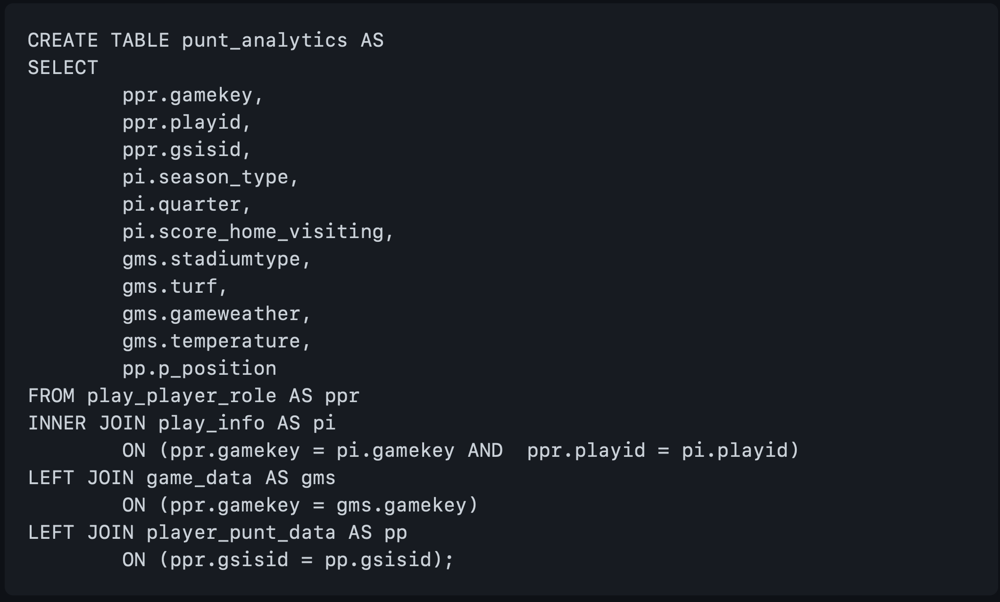

Database processing
Database Structure and Utilization
For this project, after acquiring the data, it was stored in a PostgreSQL database. Each of the databases were organized as follows:
The Injury Analytics Dataset:
The Injury dataset was pulled directly from the SQL database using SQL Alchemy to pull the data from each table for processing, with the exception of the tracking data. The size of the tracking data was prohibitively large for sqlalchemy on a local server, with over 76 million rows. To import this data in the Python files, the data table was downloaded as a csv file from the sql server into a folder labeled NFL_Turf, prior to being read into the python file. The data were connected with the following Entity Relational Diagram (ERD).

The Concussion Dataset:
For the Punt Analytics dataset, 4 tables were merged using PG Admin and used to create a new table called punt_analytics. This table was imported into the python files using SQL Alchemy as were done with the Injury tables. Also similar to the Injury data, the ngs table (tracking data) were too large to import using SQL Alchemy and again were downloaded locally and imported to python using pandas into a folder labeled NFL_Punt. Only the original data are represented in the ERD.


Outputs:
To maintain the fidelity of the original data, result tables following data processing were saved into a new database called NFL_Injuries. The data saved were the Random_Forest_Outputs, Neural_Network_Outputs, Concussion_Analysis, and clean_play_injuries. These tables were pushed to the SQL server using SQL Alchemy.